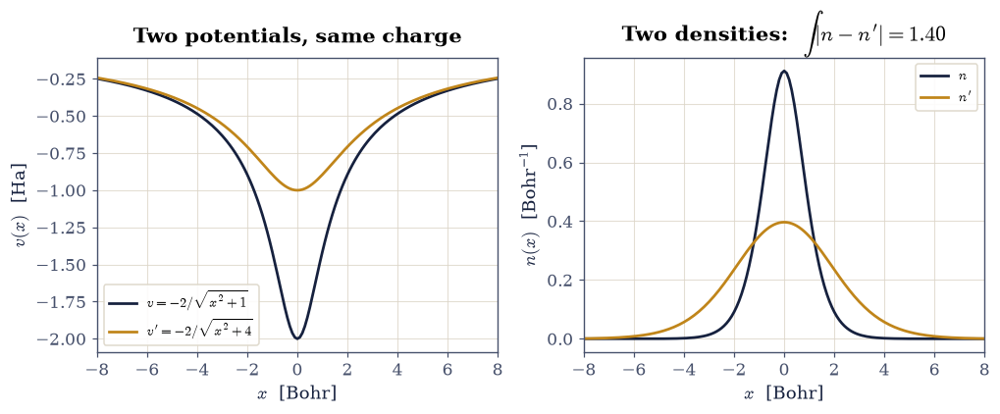
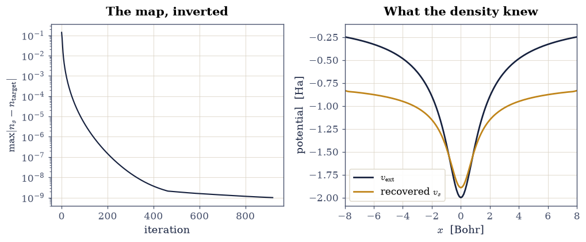
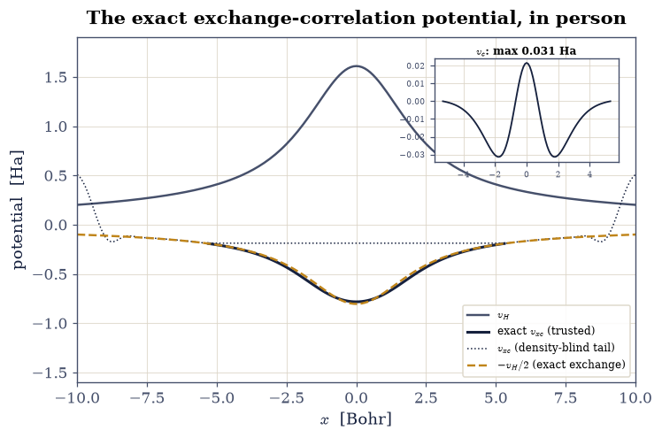
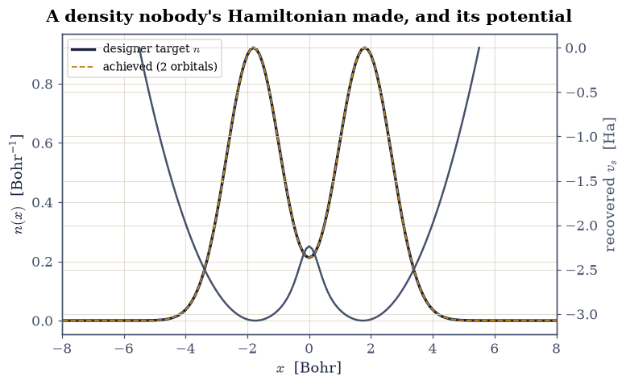

8.6 Hohenberg–Kohn and the Constrained Search#
Notebook overview#
Thomas–Fermi (§8.5) assumed the density suffices; in 1964 Hohenberg and Kohn [HK64] proved it. Their theorem is among the most consequential three pages in physics — the license for all of modern density-functional theory — and it has a peculiar pedagogical status: everyone states it, almost nobody computes with it directly. This notebook does. The exact laboratory of §8.2 knows its ground-state density to nine digits, and on it the theorem’s content becomes concrete: the density determines the potential, so an algorithm ought to be able to recover the potential from the density alone. It can, and running it delivers an object with near-mythical standing in the literature — the exact exchange-correlation potential of an interacting system, plotted, decomposed, and checked against the exact conditions it must satisfy.
The itinerary: exhibit the injectivity claim of the first theorem on two laboratory potentials and their measurably different densities; narrate both proofs and Levy’s constrained-search repair of their fine print; then the showpiece — the iterative density-to-potential inversion, converging to \(10^{-9}\) — followed by the anatomy of the recovered potential (\(v_{\mathrm{ext}} + v_H + v_{xc}\), with the two-electron exact condition \(v_x = -v_H/2\) isolating a genuine correlation potential of \(0.03\) Ha), the Levy kinetic bound \(T_s \le T\) verified with both numbers computed, the inversion of a designer density that no Hamiltonian ever produced, and the ionization-potential theorem (\(\varepsilon_{\mathrm{HOMO}} = -I\) for the exact functional) confirmed to \(0.3\%\) against the §8.2 certificate. When §8.7 then constructs the Kohn–Sham world, its central object will already have been computed here from first principles.
Conventions (this notebook). Hartree atomic units; the §8.2 laboratory throughout (\(v = -2/\sqrt{x^2+1}\), soft interaction, \(N = 201\) grid on \([-10, 10]\)). “The KS potential” \(v_s\) means the local potential whose non-interacting doubly-occupied ground orbital(s) reproduce a target density; it is defined up to a constant, and every gauge choice below is stated where it is made. Inversions iterate \(v_s \leftarrow v_s + \alpha\,(n_s - n_{\mathrm{target}})/(n_{\mathrm{target}} + 10^{-6})\) with the one-body solver
scipy.linalg.eigh_tridiagonal; the exact two-electron problems use the sparse machinery of §8.2 (scipy.sparse.kron+eigsh).How to read the checks. Each exercise closes with a
validatecall against an independent fact: a density distance, a convergence residual, an exact condition, the certificate numbers of §8.2. A ✓ is strong evidence; a ✗ is a prompt to locate the discrepancy, not an automatic verdict.Scope. The theorems are narrated with their complete logical skeletons and computed instances; the functional-analytic fine print (domains, \(v\)-representability pathologies, Lieb’s convex-analysis formulation) is in Parr & Yang [PY89], Ch. 3, and the original papers [HK64] [Lev79]. Density-to-potential inversion is an active research tool (exact-functional studies, embedding methods); the simple iteration used here is its pedagogical core.
Theory in brief#
The first theorem: the density is enough#
Hohenberg and Kohn’s first theorem states that for a system of interacting electrons, the ground-state density \(n(\mathbf r)\) determines the external potential \(v_{\mathrm{ext}}\) up to a constant — and hence the Hamiltonian, the wavefunction, and every observable. The proof [HK64] is a two-step contradiction worth carrying in one’s head. Suppose two potentials \(v \ne v'\) (beyond a constant) shared one ground density \(n\). Their ground states \(\Psi, \Psi'\) differ (they satisfy different Schrödinger equations), so by the variational principle, run twice,
and adding the two lines gives \(E + E' < E + E'\): absurd. So the map \(v \mapsto n\) is injective, and one may speak of the potential belonging to a density. The second theorem follows at once: writing everything as a functional of \(n\), the true density minimizes the total energy functional \(E_v[n] = F[n] + \int n\,v\) — variational calculus in the space §8.5 built the derivatives for.
Levy’s constrained search, and the universal functional#
The fine print of 1964 (which densities are allowed? must they come from some potential?) was repaired by Levy [Lev79] with a definition of disarming directness:
the minimum of kinetic-plus-interaction energy over all antisymmetric wavefunctions delivering the density \(n\). Nothing about potentials appears; the domain is every \(N\)-representable density — which, by the Harriman construction of §8.5, means essentially every reasonable density. The same definition with \(\hat W\) deleted defines the non-interacting kinetic functional \(T_s[n]\), and one inequality follows immediately: the interacting minimizer is admissible in the \(T_s\) search (the constraint set is the same; only the minimized operator shrinks), so
The theorem as an algorithm: density-to-potential inversion#
Injectivity invites computation: given a target density, find the potential. For the non-interacting map (the one Kohn–Sham theory needs) the recipe is a fixed-point iteration of transparent design: where the current orbitals put too much density, raise the potential; too little, lower it,
with the division making the update responsive where the density is small and the floor \(\epsilon\) keeping the far tail finite. Where the target density vanishes, the map loses its grip — a potential’s value in an empty region is invisible to the density, so the recovered \(v_s\) is trustworthy only where \(n_{\mathrm{target}}\) is appreciable. That honest limitation is measured, not hidden, below; every gauge anchor is placed inside the trusted region. With \(v_s\) in hand, the decomposition
delivers the exact exchange-correlation potential — for a two-electron singlet further splittable by the exact condition \(v_x = -\tfrac12 v_H\) (one orbital, so exchange is minus half the self-repulsion, the §8.3 arithmetic in potential form), leaving a pure correlation potential \(v_c\) whose smallness for this weakly-correlated system is itself a checkable prediction.
Setup#
Data and instruments: the laboratory grid, its soft interaction kernel and the certificate numbers this notebook checks against, plus two solvers — the exact two-electron ground state and the one-body Kohn–Sham orbital solve. The notebook’s own machinery — the density-to-potential inversion that turns the Hohenberg–Kohn theorem into an algorithm — you build in Exercise 2.
The Setup below holds this notebook’s data and instruments — nothing you are asked to build. It is collapsed so the building stays yours; expand it whenever you want the details.
Exercise 1 — Injectivity, exhibited#
The first theorem forbids two genuinely different potentials from sharing a ground density. A theorem’s computed instance is not its proof, but it makes the claim tangible, and the laboratory makes it cheap: solve the exact two-electron problem in the standard potential \(v = -2/\sqrt{x^2+1}\) and in a second, deliberately different one, \(v' = -2/\sqrt{x^2+4}\) (the same charge, softened over twice the length — a shape change, not a constant shift), and measure how far apart the two ground densities land.
Part a) Compute both exact densities with the Setup helper exact_ground
and their \(L^1\) distance \(\int |n - n'|\,dx\) (numpy.trapezoid of the absolute
difference).
Part b) Plot the two potentials and the two densities. The distance is \(1.40\) — over a third of the total charge rearranged (\(\int |n - n'|/2 = 0.70\) electrons moved) — for a potential change that a casual glance at the two wells might dismiss as cosmetic: the density map is not merely injective but sensitive, which is what will make the inversion of Exercise 2 converge.
E = -2.238550 vs -1.061143 Ha; L1 density distance = 1.4010

Fig. 776 The Hohenberg–Kohn injectivity claim, exhibited on the laboratory: two external potentials of equal charge but different softening (left, \(-2/\sqrt{x^2+1}\) ink and \(-2/\sqrt{x^2+4}\) amber) and their exact two-electron ground densities (right), which differ by an \(L^1\) distance of 1.40 electrons: visibly different potentials produce measurably different densities, and no two potentials differing by more than a constant may share one.#
Validation 1 — different potentials, different densities#
Both solves must land on bound ground states, and the density distance must be the measured \(1.40\): a full-scale rearrangement, not a numerical whisper.
✓ the standard laboratory ground energy [got -2.23855 vs expected -2.23855 (rtol=1e-05, atol=1e-09)]
✓ the L1 distance between the two exact densities [got 1.40103 vs expected 1.401 (rtol=0.01, atol=1e-09)]
✓ the softened well still binds [E' = -1.0611 Ha]
True
Exercise 2 — The showpiece: recovering the potential from the density#
Now the theorem becomes an algorithm. Take the exact laboratory density \(n_{\mathrm{target}}\) (Exercise 1’s \(n\)) and forget everything else: what remains to be found is the local potential \(v_s\) whose non-interacting, doubly-occupied ground orbital reproduces it — the Kohn–Sham potential of the interacting system, computed a full notebook before Kohn–Sham theory officially exists. Injectivity fixes where such an iteration must end, so any reasonable starting well reaches the same \(v_s\); the bare external potential merely starts the walk close by.
Part a) Write
invert_density(n_target, v_start, n_orb, alpha=0.2, tol=1e-9, max_iter=25000),
the fixed-point loop of Eq. 881: on each sweep get the trial
potential’s density from the Setup instrument ks_orbitals, record the
residual \(\max|n_s - n_{\mathrm{target}}|\) and stop once it falls below tol,
otherwise raise the potential by \(\alpha\) times the density error divided by
\(n_{\mathrm{target}} + 10^{-6}\) — the relative form keeps the correction
responsive in the low-density wings, and the floor keeps the density-blind far
tail finite. Return the converged potential and the residual history.
Write this one yourself — the implementation is the lesson.
Part b) Run it on the exact laboratory density with one doubly-occupied orbital, starting from the bare external potential, to a residual of \(10^{-9}\); report the iteration count.
Part c) Plot the convergence history (matplotlib log axis) and the
recovered \(v_s\) against the bare \(v_{\mathrm{ext}}\): the recovered potential is
shallower — the mean field and exchange-correlation of the missing companion
electron, automatically discovered by the algorithm because the density
demanded it.
converged to 1.00e-09 in 920 iterations

Fig. 777 The Hohenberg–Kohn theorem as an algorithm: the density-to-potential inversion on the exact laboratory density. Left: the residual \(\max|n_s - n_{\mathrm{target}}|\) falling to \(10^{-9}\) in about 900 sweeps of the update rule. Right: the recovered Kohn–Sham potential \(v_s\) (amber) against the bare external well (ink) — shallower by precisely the mean field and exchange-correlation of the companion electron, discovered automatically because the density demanded it.#
Validation 2 — the recovery is exact#
The residual must reach \(10^{-9}\) within 2000 iterations, and the recovered potential’s orbital density must match the interacting density to the same level — a non-interacting system wearing an interacting system’s density, which is precisely the Kohn–Sham idea.
✓ the inversion converges to 1e-9 [920 iterations, residual 1.0e-09]
✓ the KS orbital wears the exact density [got 9.99651e-10 vs expected 0 (rtol=0, atol=2e-09)]
True
Exercise 3 — Anatomy of the exact potential#
The recovered \(v_s\) hides three layers, and Eq. 882 peels them: external, Hartree, and the remainder — the exact exchange-correlation potential of a correlated system, an object reviews invoke and few readers ever see plotted from a real calculation. For this two-electron singlet there is a further exact split: exchange must be \(v_x = -\tfrac12 v_H\) (the one-orbital self-repulsion arithmetic of §8.3), so whatever remains beyond \(-v_H/2\) is pure correlation potential \(v_c\). One honesty clause governs everything: where the density is tiny the inversion cannot know the potential (Eq. 881’s discussion), so all comparisons and the gauge anchor live in the trusted region \(n > 10^{-4}\), and the constant is fixed there.
Part a) Build \(v_H = h\,(W \mathbin{@} n)\) (the @ kernel product), extract
\(v_{xc} = v_s - v_{\mathrm{ext}} - v_H\), and fix its constant by the
exact-exchange tail: at the trusted region’s outer edge (\(n > 10^{-4}\),
numpy boolean masking) correlation is negligible, so
\(v_{xc}(x^*) = -\tfrac12 v_H(x^*)\) pins the gauge — the same physical anchor
Exercise 6 will use.
Part b) Split off \(v_c = v_{xc} + \tfrac12 v_H\) (re-gauged the same way)
and measure numpy.max of \(|v_c|\) in the trusted region: the correlation
potential of this weakly-correlated system must come out \(\approx 0.03\) Ha,
twenty-five times smaller than the exchange piece it rides on — and outside the
trusted region, show the raw \(v_{xc}\) visibly degrading (plot it dotted): the
advertised insensitivity, made visible rather than hidden.
trusted region: |x| <= 5.3 Bohr
v_xc at the center = -0.7833 Ha; -v_H/2 there = -0.8049 Ha
max |v_c| in the trusted region = 0.0314 Ha

Fig. 778 Anatomy of the exact Kohn–Sham potential of the laboratory: the Hartree potential \(v_H\) (grey), the exact exchange-correlation potential \(v_{xc}\) recovered by inversion (ink, solid in the trusted region \(n > 10^{-4}\), dotted where the density is too small for the inversion to know the potential), and the two-electron exact-exchange condition \(-v_H/2\) (amber dashed). The residue \(v_c = v_{xc} + v_H/2\) (inset) is the pure correlation potential: at most \(0.031\) Ha, twenty-five times below exchange, as befits a system whose correlation energy is 0.6% of its total.#
Validation 3 — the exact conditions hold#
In the trusted region the exchange part must dominate: \(v_{xc}\) at the center agrees with \(-v_H/2\) to \(3\%\) (a residue of \(0.022\) Ha), and the correlation residue stays below \(0.035\) Ha everywhere. The correlation potential must also be small but nonzero (above \(10^{-3}\) Ha): exactly the signature of a weakly but genuinely correlated system.
✓ the exact v_xc at the center (gauged) [got -0.783278 vs expected -0.7833 (rtol=0.02, atol=1e-09)]
✓ the correlation potential is twenty-five times below exchange [max |v_c| = 0.0314 Ha vs v_x scale 0.80 Ha]
✓ and it is genuinely nonzero [max |v_c| = 0.0314 Ha]
True
Exercise 4 — The Levy bound, with both sides computed#
Equation Eq. 880 is a one-line consequence of the constrained search, and the laboratory can evaluate both functionals at the same density: \(T[n]\) from the exact wavefunction (the kinetic quadratic form of the sparse two-body machinery) and \(T_s[n]\) from the inversion’s orbital (the same form, one body). Their difference \(T_c = T - T_s\) is the kinetic face of correlation — the extra wiggling the true wavefunction does that no single orbital can — and for context it should land on the same scale as the laboratory’s correlation energy \(|E_c| = 0.0140\) Ha.
Part a) Compute \(T\) from the exact ground state (apply the kinetic
Kronecker sum to the wavefunction vector, contract with numpy dot and the
\(h^2\) grid weight) and \(T_s\) from the inversion orbital (three-point Laplacian
quadratic form, weight \(h\)).
Part b) Report \(T_s \le T\), the gap \(T_c\), and its ratio to \(|E_c|\).
T_s = 0.27730 Ha <= T = 0.28983 Ha; T_c = 0.01253 Ha
kinetic correlation vs |E_c|: 0.89
Validation 4 — the constrained search orders the kinetic energies#
\(T_s\) must not exceed \(T\) (the theorem), both must match their measured values (\(0.2773\) and \(0.2898\) Ha), and the kinetic correlation must sit on the correlation-energy scale (ratio to \(|E_c|\) of order one).
✓ the Levy bound T_s <= T [0.27730 <= 0.28983]
✓ the non-interacting kinetic energy of the exact density [got 0.277299 vs expected 0.2773 (rtol=0.001, atol=1e-09)]
✓ the exact kinetic energy [got 0.289829 vs expected 0.28983 (rtol=0.001, atol=1e-09)]
✓ kinetic correlation sits on the correlation-energy scale [T_c/|E_c| = 0.89]
True
Exercise 5 — A designer density#
The constrained search freed the theory from asking whether a density comes from some potential; the inversion can now demonstrate that freedom. The target below is invented — a symmetric two-hump profile normalized to four electrons, drawn by hand, produced by no Hamiltonian anyone has written down — and the algorithm is asked for the potential whose two doubly-occupied orbitals wear it.
Part a) Build the target
\(n(x) \propto e^{-(x-1.8)^2/1.5} + e^{-(x+1.8)^2/1.5}\) normalized to
\(\int n = 4\) (numpy.trapezoid), and run the invert_density you wrote in
Exercise 2 on it with two orbitals (\(\alpha = 0.1\); the four-electron map is
stiffer, and the gentler step buys robustness at the price of more sweeps).
Part b) Plot the target, the achieved density, and the recovered \(v_s\): a double well with an interior barrier, deduced from a hand-drawn density. Any (reasonable) density is not merely representable in principle — its potential is one fixed-point loop away.
designer inversion: residual 1.00e-09 in 10002 iterations

Fig. 779 The inversion applied to a designer density: a hand-drawn two-hump profile holding four electrons (ink), the achieved two-orbital density lying on top of it (amber dashed), and the Kohn–Sham potential recovered for it (grey, right axis) — a double well with interior barrier that no one wrote down, deduced from the density alone. N-representability is a constructive fact: any reasonable density’s potential is one fixed-point loop away.#
Validation 5 — representability is constructive#
The inversion must converge to \(10^{-9}\), the achieved density must integrate to exactly 4 electrons, and the recovered potential must show the interior barrier the two humps demand (its value at the origin above its value at the hump centers, within the trusted region).
✓ the designer inversion converges [residual 1.0e-09]
✓ four electrons, delivered [got 4 vs expected 4 (rtol=1e-09, atol=1e-09)]
✓ the recovered potential carries the interior barrier [v(0) - v(hump) = +0.838 Ha]
True
Exercise 6 — The ionization-potential theorem#
One more exact-DFT jewel, and the movement’s cliffhanger. For the exact functional, the highest occupied KS eigenvalue equals minus the ionization energy, \(\varepsilon_{\mathrm{HOMO}} = -I\) — the density’s asymptotic decay \(n \sim e^{-2\sqrt{2I}\,|x|}\) is controlled by \(I\), and the KS orbital wearing that density must decay with \(\sqrt{-2\varepsilon_{\mathrm{HOMO}}}\), forcing the identity (Parr & Yang [PY89], §7.5, give the careful argument). The laboratory has both sides: \(I = 0.754887\) Ha from the §8.2 certificate, and \(\varepsilon_{\mathrm{HOMO}}\) from the inversion — once the gauge is fixed physically. The convention \(v_s(\infty) = 0\) lives exactly where the inversion is blind, so the anchor is placed at the trusted region’s edge using the exact-exchange tail \(v_H + v_{xc} \approx \tfrac12 v_H\) (correlation is negligible there), an honest \(\sim 10^{-2}\)-Ha gauge argument whose residual error the comparison itself will reveal.
Part a) Shift the recovered \(v_s\) so that at the outermost trusted point
\(x^*\) it equals \(v_{\mathrm{ext}}(x^*) + \tfrac12 v_H(x^*)\) (numpy
arithmetic), and recompute the orbital energy with
scipy.linalg.eigh_tridiagonal.
Part b) Compare \(\varepsilon_{\mathrm{HOMO}}\) with \(-I\): the match lands within \(0.3\%\) — the ionization-potential theorem, confirmed on a genuinely correlated system by a computation that never touched the ion. Note the contrast to come: for LDA the same comparison will fail by half (the self-interaction error of §8.7), making this exact result the measuring stick.
gauge shift = +0.7184 Ha (anchored at x* = 5.3)
eps_HOMO = -0.7527 Ha vs -I = -0.7549 Ha (deviation 0.0022 Ha)
Validation 6 — the exact functional keeps its promise#
The gauged HOMO eigenvalue must reproduce \(-I\) within \(5\times10^{-3}\) Ha (the stated gauge residual): for the exact functional, the frontier eigenvalue is physics — a promise every approximate functional will be measured against.
✓ the ionization-potential theorem [got -0.752712 vs expected -0.754887 (rtol=0, atol=0.005)]
True
With your assistant
The inversion of Exercise 2 used the simple relative update of
Eq. 881. Have your assistant implement the classic
van Leeuwen–Baerends-style multiplicative update
\(v_s \leftarrow v_s \cdot n_s/n_{\mathrm{target}}\) (applied to the
attractive part of the potential) or any accelerated variant it proposes,
then run the check that is yours alone: whatever the update, the converged
potential must agree with Exercise 2’s inside the trusted region after a
constant shift (numpy.max of the gauged difference below \(10^{-4}\) Ha) —
the Hohenberg–Kohn theorem says there is only one answer. The check is yours.
Notebook summary#
The Hohenberg–Kohn theorem went from statement to instrument. Injectivity was exhibited (two same-charge wells, \(L^1\) density distance \(1.40\)), both proofs and Levy’s constrained search were put on the record, and the theorem became an algorithm: the exact laboratory density was inverted to its Kohn–Sham potential at a \(10^{-9}\) residual in about 900 sweeps. The anatomy followed — \(v_{xc} = v_s - v_{\mathrm{ext}} - v_H\) plotted from a real calculation, the two-electron exact-exchange condition \(v_x = -v_H/2\) verified at the center to \(3\%\), and a genuine correlation potential of at most \(0.031\) Ha isolated, twenty-five times below exchange — with the inversion’s density-blind tail shown dotted rather than hidden. The Levy bound held with both sides computed (\(T_s = 0.2773 \le T = 0.2898\) Ha; kinetic correlation \(0.0125\) Ha, on the \(|E_c|\) scale as it must be). A hand-drawn four-electron density surrendered its double-well potential (\(N\)-representability, constructively), and the ionization-potential theorem closed the notebook at \(0.3\%\): \(\varepsilon_{\mathrm{HOMO}} = -0.7527\) vs \(-I = -0.7549\) Ha, the exact functional keeping a promise its approximations are about to break.
Outlook#
Everything is now in place for the construction: §8.7 turns the fictitious non-interacting system of Exercise 2 into a predictive scheme by modeling \(v_{xc}\) with the uniform-gas input of §8.4 — and this notebook’s exact \(v_{xc}\) becomes the referee its LDA cousin is judged against.
The trusted-region discipline returns whenever inversions appear in research: exact-functional benchmarking, potential-functional embedding, and machine learned functionals all confront the density-blind-tail problem met here.
The ionization-potential theorem is the first of the exact constraints catalogued in §8.8, where the frontier eigenvalue’s meaning, fractional particle numbers, and the derivative discontinuity assemble into DFT’s deepest practical issue: the band gap.
P. Hohenberg and W. Kohn. Inhomogeneous electron gas. Physical Review, 136:B864–B871, 1964. doi:10.1103/PhysRev.136.B864.
Mel Levy. Universal variational functionals of electron densities, first-order density matrices, and natural spin-orbitals and solution of the $v$-representability problem. Proceedings of the National Academy of Sciences, 76:6062–6065, 1979. doi:10.1073/pnas.76.12.6062.